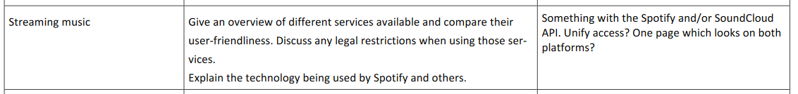

We chose a project (streaming music) from the topics list which is in moodle and wrote a
little description. We also added a few new features!

Features
- Search for songs
- Detail page for songs with:
- Lyrics from e.g. Genius
- Who is the artist?
- How many daily streams has it?
- Music Video from YouTube (embeded if existent)
- Ability to stream the song directly on the site or at least a
preview and an option to continue in the application (for example Spotify)
- etc.
- Top lists (top songs/genres/artists on spotify/soundcloud/this site
- Stats for artists
- Graph about follower growth (YouTube, Spotify, etc.)
- Graph of daily/weekly streams
- Earnings based on streams
- Comparison of streaming services (pros and cons)
- Compare user friendliness
- Show prices for different abo-models
- Discuss different abo-models
- Discuss legal restrictions
- Using the Spotify, Soundcloud, YouTube, Genius and Amazon Music APIs
- Automatically maintain a playlist of the websites top songs on for exampleSpotify
- Eventually a account system (for customization and to save Spotify/Soundcloud Tokens --> would have to be encrypted using hash and a salt)